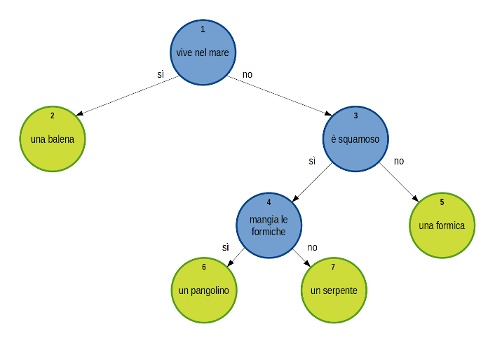
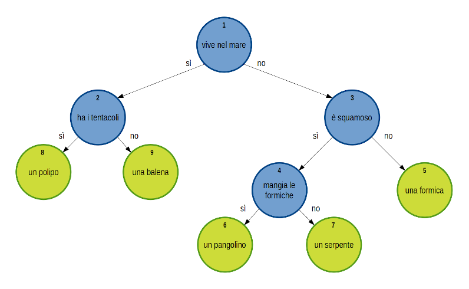

risorse | scratch e… pangolini
Pangolini è un gioco in cui il computer tenta di indovinare l'animale pensato dall'utente. Il listato BASIC si trova nell'appendice del manuale dello ZX Spectrum. Probabilmente si tratta di una rivisitazione del gioco “Animals” pubblicato nel libro BASIC Computer Games.
Il programma all'inizio è in grado di distinguere quattro animali: balena, formica, pangolino, serpente. Il computer pone una serie di domande all'utente e usa le risposte ottenute per attraversare un albero decisionale binario. I nodi terminali dell'albero, in verde nello schema sottostante, rappresentano le possibili risposte:
L'albero decisionale iniziale.
L'albero, i cui nodi sono numerati progressivamente, è rappresentato internamente per mezzo di tre liste. La prima, questions, contiene il testo associato al nodo. Le altre due liste, yes e no, contengono rispettivamente il nodo da raggiungere se la risposta alla domanda associata al nodo è stata affermativa oppure negativa. Il programma si aspetta un sì con l'accento per le risposte affermative. Per i nodi terminali, che non rappresentano una domanda ma una possibile risposta, il valore delle due liste non è significativo: il programma inserisce degli zeri in questo caso. Il contenuto inziale delle tre liste è il seguente:
| # | questions | yes | no |
|---|---|---|---|
| 1 | vive nel mare | 2 | 3 |
| 2 | una balena | - | - |
| 3 | è squamoso | 4 | 5 |
| 4 | mangia le formiche | 6 | 7 |
| 5 | una formica | - | - |
| 6 | un pangolino | - | - |
| 7 | un serpente | - | - |
Il programma può essere considerato una forma estremamente semplificata di sistema esperto. Le ramificazioni in questo caso sono binarie, mentre nel caso più generale ogni nodo presenta un numero arbitrario di uscite. Per raggiungere un nodo terminale è necessario rispondere in sequenza a tutti i quesiti proposti da Scratch quando normalmente tutte le informazioni a disposizione vengono fornite in blocco all'inizio; la discesa sull'albero decisionale può arrestarsi su uno o più nodi intermedi se i dati a disposizione non sono sufficienti a raggiungerne uno terminale. In questo caso il sistema fornisce un insieme di possibili risposte ognuna corredata da un certo grado di plausibilità.
Il programma è in grado di imparare a distinguere nuovi animali. Supponiamo ad esempio di scegliere un polipo come animale segreto. Ecco come si svolgerebbe il colloquio:
A questo punto il programma si prepara a estendere l'albero decisionale per far posto al nuovo animale. Il programma chiede innanzitutto di che animale si tratta:
Poiché ora ci sono due animali che condividono la caratteristica vive nel mare è necessario introdurre un criterio per distinguerli. Per questo il programma chiede:
A questo punto si può procedere la modifica dell'albero deicisionale:
L'albero esteso con il polipo e il criterio per distinguerlo dalla balena.
Il programma aggiorna conseguentemente la sua base di conoscenza:
| # | questions | yes | no |
|---|---|---|---|
| 1 | vive nel mare | 2 | 3 |
| 2 | 8 | 9 | |
| 3 | è squamoso | 4 | 5 |
| 4 | mangia le formiche | 6 | 7 |
| 5 | una formica | - | - |
| 6 | un pangolino | - | - |
| 7 | un serpente | - | - |
| 8 | un polipo | - | - |
| 9 | una balena | - | - |
Il nodo 2 è diventato un nodo intermedio associato alla discriminante ha i tentacoli. Il nodo associato al polipo è il numero 8, quello associato alla balena il numero 9.
Provate ad inserire altri animali, ad esempio:
Cercate di anticipare la posizione in cui verranno inseriti nell'albero.
Il programma è scaricabile qui.
Pagina modificata il 16/05/2021